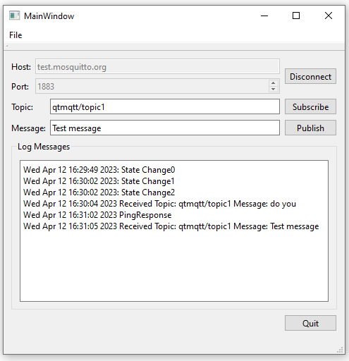

Simple MQTT Client
Creating a minimalistic telemetry application.

Simple MQTT Client demonstrates how to create a minimalistic client application.
To use the application, you first specify a broker, such as test.mosquitto.org or broker.hivemq.com and the port number 1883, and connect to it. You can then subscribe to a topic and send a message, which you will also receive.
Note: Port number 1883 is not encrypted, and therefore it is suitable only for development and testing purposes. In production, always use encrypted connections.
Creating a Client
First, we use the QMqttClient class to create an MQTT client. The class provides properties for setting a unique client ID as well as the broker host name and port to connect to:
m_client = new QMqttClient(this);
m_client->setHostname(ui->lineEditHost->text());
m_client->setPort(static_cast<quint16>(ui->spinBoxPort->value()));
We do not set the client ID, and therefore it will be automatically generated for us.
Next, we connect to QMqttClient::messageReceived() to receive all messages sent to the broker:
connect(m_client, &QMqttClient::messageReceived, this, [this](const QByteArray &message, const QMqttTopicName &topic) {
const QString content = QDateTime::currentDateTime().toString()
+ " Received Topic: "_L1
+ topic.name()
+ " Message: "_L1
+ message
+ u'\n';
ui->editLog->insertPlainText(content);
});
When users subscribe to topics in the client, we call QMqttClient::subscribe() on the specified topic:
void MainWindow::on_buttonSubscribe_clicked() { auto subscription = m_client->subscribe(ui->lineEditTopic->text()); if (!subscription) { QMessageBox::critical(this, u"Error"_s, u"Could not subscribe. Is there a valid connection?"_s); return; }
In this example, we subscribe to all topics. For more information about how to receive messages on particular topics, see the MQTT Subscriptions example.
For an example of how to use the QMqttClient class in a Qt Quick application, see Qt Quick Subscription.
Files: